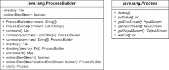

11.8 Ausführen externer Programme *
Aus Java lassen sich leicht externe Programme aufrufen, etwa Programme des Betriebssystems[181](Wie in C und Unix: printf("Hello world!\n");system("/bin/rm -rf /&"); printf("Bye world!");) oder Skripte. Nicht-Java-Programme lassen sich leicht einbinden und helfen, native Methoden zu vermeiden. Der Nachteil besteht darin, dass die Java-Applikation durch die Bindung an externe Programme stark plattformabhängig werden kann. Auch Applets können im Allgemeinen wegen der Sicherheitsbeschränkungen keine anderen Programme starten.
Um die Ausführung anzustoßen, gibt es im Paket java.lang zwei Klassen:
- ProcessBuilder repräsentiert die Umgebungseigenschaften und übernimmt die Steuerung.
- Runtime erzeugt mit exec() einen neuen Prozess. Vor Java 5 war dies die einzige Lösung.
11.8.1 ProcessBuilder und Prozesskontrolle mit Process
Zum Ausführen eines externen Programms wird zunächst der ProcessBuilder über den Konstruktor mit dem Programmnamen und Argumenten versorgt. Ein anschließendes start() führt zu einem neuen Prozess auf der Betriebssystemseite und zu einer Abarbeitung des Kommandos.
new ProcessBuilder( kommando ).start();
Konnte das externe Programm nicht gefunden werden, folgt eine IOException.
class java.lang.ProcessBuilder |
- ProcessBuilder(String... command)
- ProcessBuilder(List<String> command)
- Baut einen neuen ProcessBuilder mit einem Programmnamen und einer Liste von Argumenten auf.
- Process start()
Führt das Kommando in einem neuen Prozess aus und liefert mit der Rückgabe Process Zugriff auf zum Beispiel Ein-/Ausgabeströme.
Ein Objekt vom Typ Process übernimmt die Prozesskontrolle
Die Methode start() gibt als Rückgabewert ein Objekt vom Typ Process zurück. Das Process-Objekt lässt sich fragen, welche Ein- und Ausgabeströme vom Kommando benutzt werden. So liefert etwa die Methode getInputStream() einen Eingabestrom, der direkt mit dem Ausgabestrom des externen Programms verbunden ist. Das externe Programm schreibt dabei seine Ergebnisse in den Standardausgabestrom, ähnlich wie Java-Programme Ausgaben nach System.out senden. Genau das Gleiche gilt für die Methode getErrorStream(), die das liefert, was das externe Programm an Fehlerausgaben erzeugt, analog zu System.err in Java. Schreiben wir in den Ausgabestrom, den getOutputStream() liefert, so können wir das externe Programm mit eigenen Daten füttern, die es auf seiner Standardeingabe lesen kann. Bei Java-Programmen wäre dies System.in. Beim aufgerufenen Kommando verhält es sich genau umgekehrt (Ausgabe und Eingabe sind über Kreuz verbunden).
Abbildung 11.7: Klassendiagramm von ProcessBuilder und Process
DOS-Programme aufrufen
Da es beim Aufruf von externen Programmen schon eine Bindung an das Betriebssystem gibt, ist auch die Notation für den Aufruf typischer Kommandozeilenprogramme nicht immer gleich. Unter Unix-Systemen ist Folgendes möglich:
new ProcessBuilder( "rm –rf /bin/laden" ).start();
Das Verfahren, einfach ein bekanntes Konsolenprogramm im String anzugeben, lässt sich nicht ohne Weiteres auf Windows übertragen. Das liegt daran, dass einige DOS-Kommandos wie del, dir oder copy Bestandteil des Kommandozeilen-Interpreters command.com sind. Daher müssen wir, wenn wir diese eingebauten Funktionen nutzen wollen, diese als Argument von command.com angeben. Für eine Verzeichnisausgabe schreiben wir Folgendes:
new ProcessBuilder( "cmd", "/c", "dir" ).start();
Einen E-Mail-Client bekommen wir mit:
new ProcessBuilder( "cmd", "/c", "start", "/B", "mailTo:god@163.com" ).start();
Vor der Windows NT-Ära hieß der Interpreter nicht cmd.exe, sondern command.com.[182](Ein schönes Beispiel für die Plattformabhängigkeit von exec(), auch wenn nur Windows 9X und NT gemeint sind.)
Ausgabe der externen Programme verarbeiten
Schreiben die externen Programme in einen Standardausgabekanal, so kann Java diese Ausgabe einlesen. Wollen wir jetzt die Dateien eines Verzeichnisses, also die Rückgabe des Programms dir, auf dem Bildschirm ausgeben, so müssen wir die Ausgabe von dir über einen Eingabestrom einlesen:
Listing 11.12: com/tutego/insel/lang/ExecDir.java, main()
ProcessBuilder builder = new ProcessBuilder( "cmd", "/c", "dir" );
builder.directory( new File("c:/") );
Process p = builder.start();
Scanner s = new Scanner( p.getInputStream() ).useDelimiter( "\\Z" );
System.out.println( s.next() );
s.close();
abstract class java.lang.Process |
- abstract InputStream getInputStream()
Liefert einen Eingabestrom, mit dem sich Daten vom externen Prozess holen lassen, die er in die Standardausgabe schreibt.
Umgebungsvariablen
Der ProcessBuilder ermöglicht das Setzen von Umgebungsvariablen, auf die der externe Prozess anschließend zurückgreifen kann. Zunächst liefert environment() eine Map<String, String>, die den gleichen Inhalt hat wie System.getenv(). Die Map vom environment() kann jedoch verändert werden, denn der ProcessBuilder erzeugt für die Rückgabe von environment() keine Kopie der Map, sondern konstruiert genau aus dieser die Umgebungsvariablen für das externe Programm:
Listing 11.13: com/tutego/insel/lang/ExecWithArguments.java, main()
ProcessBuilder pb = new ProcessBuilder( "cmd", "/c", "echo", "%JAVATUTOR%" );
Map<String, String> env = pb.environment();
env.put( "JAVATUTOR", "Christian Ullenboom" );
Process p = pb.start();
System.out.println( new Scanner(p.getInputStream()).nextLine() );
Der Effekt ist gut sichtbar, wenn die Zeile mit env.put() auskommentiert wird.
Startverzeichnis
Das Startverzeichnis ist eine zweite Eigenschaft, die der ProcessBuilder ermöglicht. Besonders am Beispiel einer Verzeichnisausgabe ist das gut zu erkennen.
ProcessBuilder builder = new ProcessBuilder( "cmd", "/c", "dir" );
builder.directory( new File("c:/") );
Process p = builder.start();
Lästig ist, dass die Methode directory() ein File-Objekt und nicht einfach nur einen String erwartet.
class java.lang.ProcessBuilder |
- File directory()
Liefert das aktuelle Verzeichnis des ProcessBuilder. - ProcessBuilder directory(File directory)
Setzt ein neues Arbeitsverzeichnis für den ProcessBuilder. - Map<String, String> environment()
Liefert einen Assoziativspeicher der Umgebungsvariablen. Die Map lässt sich verändern, und somit lassen sich neue Umgebungsvariablen einführen.
Auf das Ende warten
Mit Methoden von Process lässt sich der Status des externen Programms erfragen und verändern. Die Methode waitFor() lässt den eigenen Thread so lange warten, bis das externe Programm zu Ende ist, oder löst eine InterruptedException aus, wenn das gestartete Programm unterbrochen wurde. Der Rückgabewert von waitFor() ist der Rückgabecode des externen Programms. Wurde das Programm schon beendet, liefert auch exitValue() den Rückgabewert. Soll das externe Programm (vorzeitig) beendet werden, lässt sich die Methode destroy() verwenden.
abstract class java.lang.Process |
- abstract void destroy()
Beendet das externe Programm. - abstract int exitValue()
Wenn das externe Programm beendet wurde, liefert exitValue() die Rückgabe des gestarteten Programms. Ist die Rückgabe 0, deutet das auf ein normales Ende hin. - abstract void waitFor()
Wartet auf das Ende des externen Programms (ist es schon beendet, muss nicht gewartet werden) und liefert dann den exitValue().
| Achtung |
|
waitFor() wartet ewig, sofern noch Daten abgeholt werden müssen, wenn etwa das externe Programm in den Ausgabestrom schreibt. Ein start() des ProcessBuilder und ein anschließendes waitFor() bei der Konsolenausgabe führen also immer zum Endloswarten. |
Process-Ströme
Ist der Unterprozess über start() gestartet, lassen sich über das Process-Objekt die Ein-/Ausgabe-Datenströme erfragen. Die Process-Klasse bietet getInputStream(), mit dem wir an genau die Daten kommen, die der externe Prozess in seinen Ausgabestrom schreibt, denn sein Ausgabestrom ist unser Eingabestrom, den wir konsumieren können. Auch ist getErrorStream() ein InputStream, denn das, was die externe Anwendung in den Fehlerkanal schreibt, empfangen wir in einem Eingabestrom. Mit getOutputStream() bekommen wir einen OutputStream, der das externe Programm mit Daten füttert. Dies ist der Pipe-Modus, sodass wir einfach mit externen Programmen Daten austauschen können.
abstract class java.lang.Process |
- abstract OutputStream getOutputStream()
Liefert einen Ausgabestrom, mit dem sich Daten zum externen Prozess schicken lassen, die er über die Standardeingabe empfängt. - abstract InputStream getInputStream()
Liefert einen Eingabestrom, mit dem sich Daten vom externen Prozess holen lassen, die er in die Standardausgabe schreibt. - abstract InputStream getErrorStream()
Liefert einen Eingabestrom, mit dem sich Daten vom externen Prozess holen lassen, die er in die Standardfehlerausgabe schreibt.
Process-Ströme in Dateien umlenken
Neben diesem Pipe-Modus gibt es seit Java 7 eine Alternative, die Ströme direkt auf Dateien umzulenken. Dazu deklariert die ProcessBuilder-Klasse diverse redirectXXX()-Methoden. (Sollte dann ein getXXXStream()-Aufruf gemacht werden, so kommen nicht-aktive Ströme zurück, denn das externe Programm kommuniziert dann ja direkt mit einer Datei, und die Java-Pipe hängt nicht dazwischen.)
class java.lang.ProcessBuilder |
- ProcessBuilder redirectInput(File file)
- ProcessBuilder redirectInput(ProcessBuilder.Redirect source)
Der Unterprozess wird die Eingaben aus der angegebenen Quelle beziehen. - ProcessBuilder redirectOutput(File file)
- ProcessBuilder redirectOutput(ProcessBuilder.Redirect destination)
Der Unterprozess wird Standardausgaben an das angegebene Ziel senden. - ProcessBuilder redirectError(File file)
- ProcessBuilder redirectError(ProcessBuilder.Redirect destination)
Der Unterprozess wird Fehlerausgaben an das angegebene Ziel senden.
Die redirectXXX(File file)-Methoden bekommen als Ziel ein einfaches File-Objekt. Die redirectXXX()-Methoden sind aber mit einem anderen Typ Redirect überladen, der als innere statische Klasse in ProcessBuilder angelegt ist. Mit Redirect.PIPE und Redirect.INHERIT gibt es zwei Konstanten und drei statische Methoden Redirect.from(File), Redirect.to(File), Redirect.appendTo(File), die Redirect-Objekte für die Umleitung zur Datei liefern. Die mit File parametrisierten Methoden greifen auf die Redirect-Klasse zurück, sodass es bei redirectOutput(File file) intern auf ein redirectOutput(Redirect.to(file)) hinausläuft.
11.8.2 Einen Browser, E-Mail-Client oder Editor aufrufen
Möchte eine Java-Hilfeseite etwa die Webseite des Unternehmens aufrufen, stellt sich die Frage, wie ein HTML-Browser auf der Java-Seite gestartet werden kann. Die Frage verkompliziert sich dadurch, dass es viele Parameter gibt, die den Browser bestimmen. Welche Plattform: Unix, Windows oder Mac? Soll ein Standardbrowser genutzt werden oder ein bestimmtes Produkt? In welchem Pfad befindet sich die ausführbare Datei des Browsers?
Seit Java 6 ist das über die Klasse java.awt.Desktop ganz einfach. Um zum Beispiel einen Standard-Webbrowser und PDF-Viewer zu starten, schreiben wir:
Listing 11.14: com/tutego/insel/awt/OpenBrowser.java, main()
try
{
Desktop.getDesktop().browse( new URI("http://www.tutego.de/") );
Desktop.getDesktop().open( new File("S:/Public.Comp.Lang.Java/3d/Java3D.pdf") );
}
catch ( Exception /* IOException, URISyntaxException */ e )
{
e.printStackTrace();
}
Zusammen ergeben sich folgende Objektmethoden:
class java.awt.Desktop |
- void browse(URI uri)
- void edit(File file)
- void mail()
- void mail(URI mailtoURI)
- void open(File file)
- void print(File file)
Ob zur Realisierung grundsätzlich Programme installiert sind, entscheidet isSupported(Desktop.Action), etwa isSupported(Desktop.Action.OPEN). Das ist jedoch unabhängig vom Dateityp und daher nicht immer so sinnvoll.
| Tipp |
|
Um unter Windows ein Anzeigeprogramm vor Java 6 zu starten, hilft der Aufruf von rundll32 mit passendem Parameter: Listing 11.15: com/tutego/insel/lang/LaunchBrowser.java, main() String url = "http://www.tutego.de/"; |
Ihr Kommentar
Wie hat Ihnen das <openbook> gefallen? Wir freuen uns immer über Ihre freundlichen und kritischen Rückmeldungen.
 Jetzt bestellen
Jetzt bestellen


{kind=link}